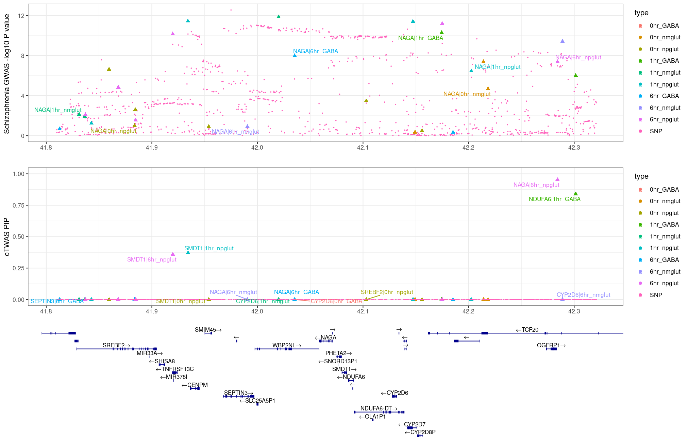

cTWAS_all_cell
Lifan Liang
2024-03-20
Last updated: 2024-03-28
Checks: 7 0
Knit directory: neuron_stim_eQTL100/
This reproducible R Markdown analysis was created with workflowr (version 1.7.0). The Checks tab describes the reproducibility checks that were applied when the results were created. The Past versions tab lists the development history.
Great! Since the R Markdown file has been committed to the Git repository, you know the exact version of the code that produced these results.
Great job! The global environment was empty. Objects defined in the global environment can affect the analysis in your R Markdown file in unknown ways. For reproduciblity it’s best to always run the code in an empty environment.
The command set.seed(20231109) was run prior to running
the code in the R Markdown file. Setting a seed ensures that any results
that rely on randomness, e.g. subsampling or permutations, are
reproducible.
Great job! Recording the operating system, R version, and package versions is critical for reproducibility.
Nice! There were no cached chunks for this analysis, so you can be confident that you successfully produced the results during this run.
Great job! Using relative paths to the files within your workflowr project makes it easier to run your code on other machines.
Great! You are using Git for version control. Tracking code development and connecting the code version to the results is critical for reproducibility.
The results in this page were generated with repository version 412ec7c. See the Past versions tab to see a history of the changes made to the R Markdown and HTML files.
Note that you need to be careful to ensure that all relevant files for
the analysis have been committed to Git prior to generating the results
(you can use wflow_publish or
wflow_git_commit). workflowr only checks the R Markdown
file, but you know if there are other scripts or data files that it
depends on. Below is the status of the Git repository when the results
were generated:
Ignored files:
Ignored: .DS_Store
Ignored: .Rhistory
Ignored: data/.DS_Store
Ignored: data/single_group_ctwas/.DS_Store
Note that any generated files, e.g. HTML, png, CSS, etc., are not included in this status report because it is ok for generated content to have uncommitted changes.
These are the previous versions of the repository in which changes were
made to the R Markdown (analysis/cTWAS_all_cell.Rmd) and
HTML (docs/cTWAS_all_cell.html) files. If you’ve configured
a remote Git repository (see ?wflow_git_remote), click on
the hyperlinks in the table below to view the files as they were in that
past version.
| File | Version | Author | Date | Message |
|---|---|---|---|---|
| Rmd | 412ec7c | Lifan Liang | 2024-03-28 | wflow_publish(c("analysis", "data", "docs")) |
| html | 412ec7c | Lifan Liang | 2024-03-28 | wflow_publish(c("analysis", "data", "docs")) |
| html | 4574572 | Lifan Liang | 2024-03-28 | Build site. |
| Rmd | ee16cd0 | Lifan Liang | 2024-03-28 | wflow_publish(c("analysis", "docs")) |
| html | ee16cd0 | Lifan Liang | 2024-03-28 | wflow_publish(c("analysis", "docs")) |
| html | be0ac9a | Lifan Liang | 2024-03-28 | Build site. |
| Rmd | a10668b | Lifan Liang | 2024-03-28 | wflow_publish("analysis") |
| html | 435d87d | Lifan Liang | 2024-03-28 | Build site. |
| Rmd | 268fb56 | Lifan Liang | 2024-03-28 | wflow_publish("analysis") |
| html | bee6c05 | Lifan Liang | 2024-03-21 | Build site. |
| Rmd | 0c544d0 | Lifan Liang | 2024-03-21 | wflow_publish(c("data", "analysis")) |
Weights
Use the same set of eQTLs as cell type sperated cTWAS.These eQTLs are the unions of top eQTL within the same cell type. But eQTLs with nominal P values less than 0.1 in a certain condition was removed.
SNP 0hr_GABA 1hr_GABA 6hr_GABA 0hr_nmglut 1hr_nmglut 6hr_nmglut
6964380 3517 3509 3507 2153 2118 2157
0hr_npglut 1hr_npglut 6hr_npglut
4389 4366 4405 Parameters
| Version | Author | Date |
|---|---|---|
| bee6c05 | Lifan Liang | 2024-03-21 |
Prior for each context
| Version | Author | Date |
|---|---|---|
| bee6c05 | Lifan Liang | 2024-03-21 |
NMglut has higher priors than the other cell types. However, this is also the cell type with the least sample size for eQTL and hence the smallest number of eGenes.
| Version | Author | Date |
|---|---|---|
| bee6c05 | Lifan Liang | 2024-03-21 |


Results
There are 60 egenes if the cutoff was set to PIP>0.5.

Comparing with GTEx
Cerebellum hemisphere is the tissue with the highest power in GTEx cTWAS. There are 28 genes with PIPs > 0.5.

| genename | PIP_sum | PIP_0hr_GABA | PIP_0hr_nmglut | PIP_0hr_npglut | PIP_1hr_GABA | PIP_1hr_nmglut | PIP_1hr_npglut | PIP_6hr_GABA | PIP_6hr_nmglut | PIP_6hr_npglut | |
|---|---|---|---|---|---|---|---|---|---|---|---|
| 62 | FOXN2 | 0.8830154 | 0 | 0 | 0.000000 | 0.0000000 | 0.8830154 | 0.00000 | 0.0000000 | 0 | 0.0000000 |
| 130 | SERPINI1 | 0.7920083 | 0 | 0 | 0.000000 | 0.2293343 | 0.3876045 | 0.00000 | 0.1750695 | 0 | 0.0000000 |
| 146 | TDRD6 | 0.7867461 | 0 | 0 | 0.217928 | 0.3031301 | 0.0000000 | 0.00000 | 0.0000000 | 0 | 0.2656881 |
| 161 | ZNF823 | 0.9242300 | 0 | 0 | 0.000000 | 0.0000000 | 0.0000000 | 0.92423 | 0.0000000 | 0 | 0.0000000 |

Cell type specific eGenes
An eGene is assigned to a cell type if over 60% of the PIP sum are from that cell type. Genes with higher sum of PIP are more likely to be cell type specific.
GABA nmglut npglut Unspecific
21 18 13 8 
| Version | Author | Date |
|---|---|---|
| 412ec7c | Lifan Liang | 2024-03-28 |
Dynamic eGenes
For each cell type, we computed PIP_diff as in previous
cTWAS results. PIP_diff > 0.5 in a certain cell type was
regarded as Dynamic eGenes. None of the unspecific eGenes are
dynamic.
Dynamic eGenes in GABA
GABA has 21 eGenes, 12 of them are dynamic.
Attaching package: 'dplyr'The following objects are masked from 'package:stats':
filter, lagThe following objects are masked from 'package:base':
intersect, setdiff, setequal, unionEnrichment analysis for GABA specific genes
Uploading data to Enrichr... Done.
Querying GO_Biological_Process_2018... Done.
Parsing results... Done.Enrichment analysis for GABA dynamic genes
Uploading data to Enrichr... Done.
Querying GO_Biological_Process_2018... Done.
Parsing results... Done.
Dynamic eGenes in NMglut
nmglut has 19 eGenes, 13 of them are dynamic.
Enrichment analysis for NMglut specific genes
Uploading data to Enrichr... Done.
Querying GO_Biological_Process_2018... Done.
Parsing results... Done.Enrichment analysis for NMglut dynamic genes
Uploading data to Enrichr... Done.
Querying GO_Biological_Process_2018... Done.
Parsing results... Done.
Dynamic eGenes in NPglut
npglut has 13 eGenes, 9 of them are dynamic
Enrichment analysis for NPglut specific genes
Uploading data to Enrichr... Done.
Querying GO_Biological_Process_2018... Done.
Parsing results... Done.Enrichment analysis for NPglut dynamic genes
Uploading data to Enrichr... Done.
Querying GO_Biological_Process_2018... Done.
Parsing results... Done.
sessionInfo()R version 4.1.2 (2021-11-01)
Platform: x86_64-apple-darwin17.0 (64-bit)
Running under: macOS Big Sur 10.16
Matrix products: default
BLAS: /Library/Frameworks/R.framework/Versions/4.1/Resources/lib/libRblas.0.dylib
LAPACK: /Library/Frameworks/R.framework/Versions/4.1/Resources/lib/libRlapack.dylib
locale:
[1] en_US.UTF-8/en_US.UTF-8/en_US.UTF-8/C/en_US.UTF-8/en_US.UTF-8
attached base packages:
[1] stats graphics grDevices utils datasets methods base
other attached packages:
[1] enrichR_3.2 dplyr_1.0.7 ggplot2_3.3.5 workflowr_1.7.0
loaded via a namespace (and not attached):
[1] tidyselect_1.1.1 xfun_0.29 bslib_0.3.1 purrr_0.3.4
[5] colorspace_2.0-2 vctrs_0.3.8 generics_0.1.2 htmltools_0.5.2
[9] yaml_2.2.2 utf8_1.2.2 rlang_1.0.0 jquerylib_0.1.4
[13] later_1.3.0 pillar_1.7.0 withr_2.4.3 glue_1.6.1
[17] DBI_1.1.2 lifecycle_1.0.1 stringr_1.4.0 munsell_0.5.0
[21] gtable_0.3.0 htmlwidgets_1.5.4 evaluate_0.14 WriteXLS_6.4.0
[25] labeling_0.4.2 knitr_1.37 callr_3.7.0 fastmap_1.1.0
[29] crosstalk_1.2.0 httpuv_1.6.5 ps_1.6.0 curl_4.3.2
[33] fansi_1.0.2 highr_0.9 Rcpp_1.0.11 DT_0.26
[37] promises_1.2.0.1 scales_1.1.1 jsonlite_1.7.3 farver_2.1.0
[41] fs_1.5.2 rjson_0.2.21 digest_0.6.29 stringi_1.7.6
[45] processx_3.5.2 getPass_0.2-2 rprojroot_2.0.2 grid_4.1.2
[49] cowplot_1.1.1 cli_3.1.1 tools_4.1.2 magrittr_2.0.2
[53] sass_0.4.1 tibble_3.1.6 crayon_1.4.2 whisker_0.4
[57] pkgconfig_2.0.3 ellipsis_0.3.2 assertthat_0.2.1 rmarkdown_2.11
[61] httr_1.4.2 rstudioapi_0.13 R6_2.5.1 git2r_0.29.0
[65] compiler_4.1.2